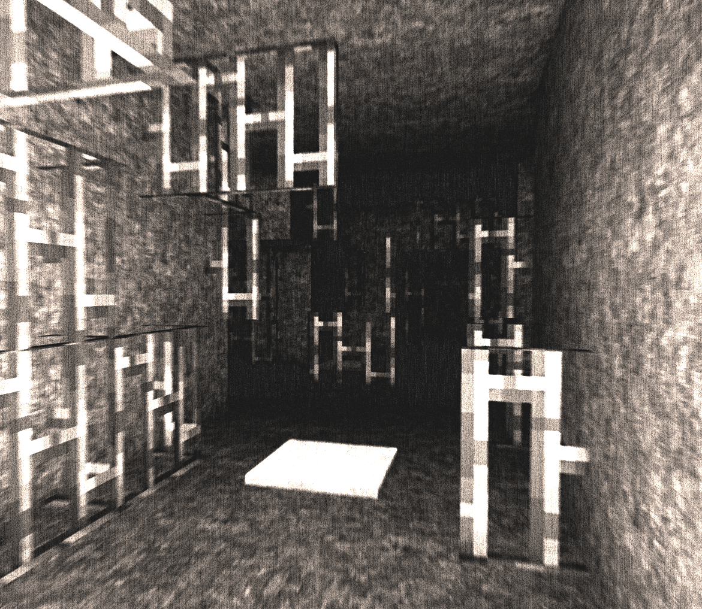

|  |
|---|
| RSE-018 shortly after discovery |
RSE-018 is a seemingly infinite maze of randomly segmented and sized hallways and rooms composed entirely of common metals and alloys, most notably steel. RSE-018 contains various items that are traditionally manufactured with steel, such as but not limited to the following: Prison cell bars, pipes, silverware, household appliances, beams, and segments of pylons. Any form of inorganic matter that comes into contact with RSE-018 is almost instantaneously converted into steel and remains in the place of contact.
RSE-018 is capable of manifesting itself within any door space at seemingly random intervals. If not properly dealt with, the contents of RSE-018 will spread and convert surrounding areas to itself, expanding its already near infinite area until relocating. It is highly theorized, yet not completely proven, that RSE-018 may 'feed' on matter provided to it, and will only relocate once it stops receiving a source of fuel. Due to the likelihood of this theory, Protocol 018-ALPHA is to be carefully planned months in advance - see containment procedures for more details.
RSE-018 was discovered and thereafter acquired by the RSE Association on March 21, 2018, when RSE-018 manifested itself within the observation deck of RSE-030's containment cell - located in S-02 of Location 02. RSE-018 is to be monitored by three Level 3 Clearance personnel at all times. The containment cell is equipped with four high capacity incinerators to prevent RSE-018 from expanding. Protocol 018-ALPHA is to be completed biweekly, where a collection of five low-level test subjects are to be equipped with GPS units and given various items to place approximately fifteen meters within RSE-018.